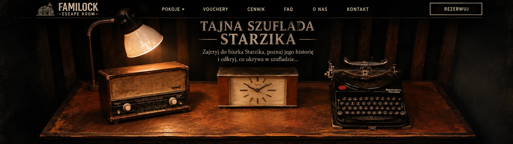
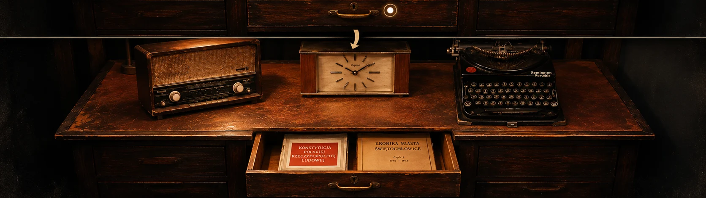

FAMI
LOCK
STARZIK · PAMIĄTKA PO GRZE
JESZCZE JEDNA HISTORIA
Tajna szuflada Starzika
Rozejrzyj się po biurku. Dotknij przedmiotów i zajrzyj do szuflady.


Radio
Zegar
Maszyna do pisania
Szuflada
Wybierz przedmiot na biurku
Otwórz szufladę
×